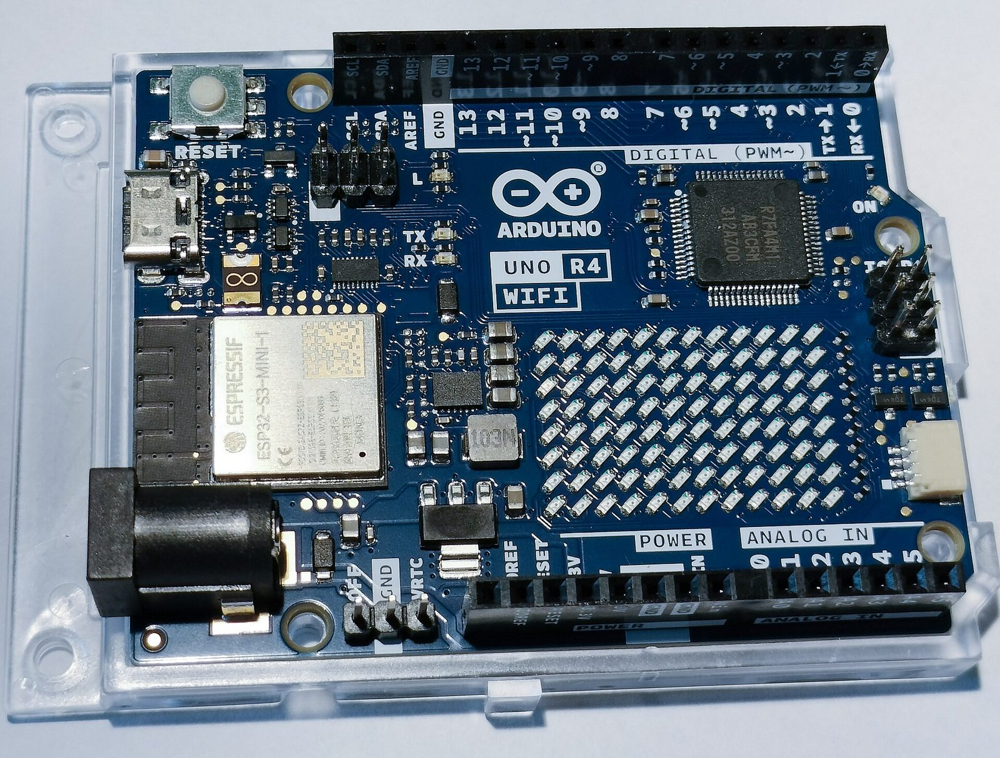
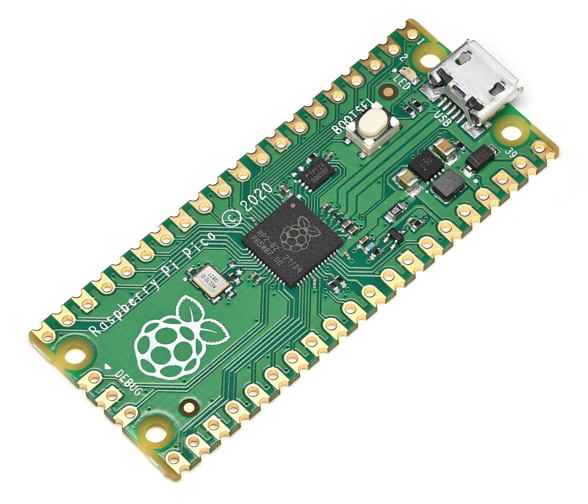

ACM @ RCC
Deck kit
Every slide, one idea
Eleven kinds of slide, one engine, and a check that walks it.
The rule
One idea per slide, and the Rail only once.
Type floors on the wall
Under the floor
Body at 24 px reads fine on a laptop and vanishes from the back row.
At the floor
Titles 72, body 40, ledger 32. The check fails anything smaller.
How a press moves the deck
- Land whatever is still movingA fast clicker never loses a press.
- Work out the next slide or beat
- Animate over the top, then set the state from nothing
Keys worth knowing
- Next and back, beat by beat
- Start and reset the clock
- Speaker notes
- Room mode
Photos
Name a thing, show the thing
The fetch script finds an open-licensed photo and writes the credit for you.

Framed
Or sit it inside the margins

Two boards, side by side
- Arduino UNO R4 WiFiPhoto: Lomrjyo, CC BY-SA 4.0
- Raspberry Pi PicoPhoto: Phiarc, CC BY-SA 4.0
{kind=link}
{kind=link}
Either side works
The words never sit on the photo.
A slide is two attributes
section class="slide" data-kind="statement" data-section="Rules" h2 One idea per slide.
96px of margin
On every side, every slide
Go big once.
Try it
Press T and watch this count down
1:00
T to start, R to reset.
Before you present
Run the check, then walk it once
Check: node deck-kit/check.mjs on your deck, zero failures.
ACM @ RCC
Updated